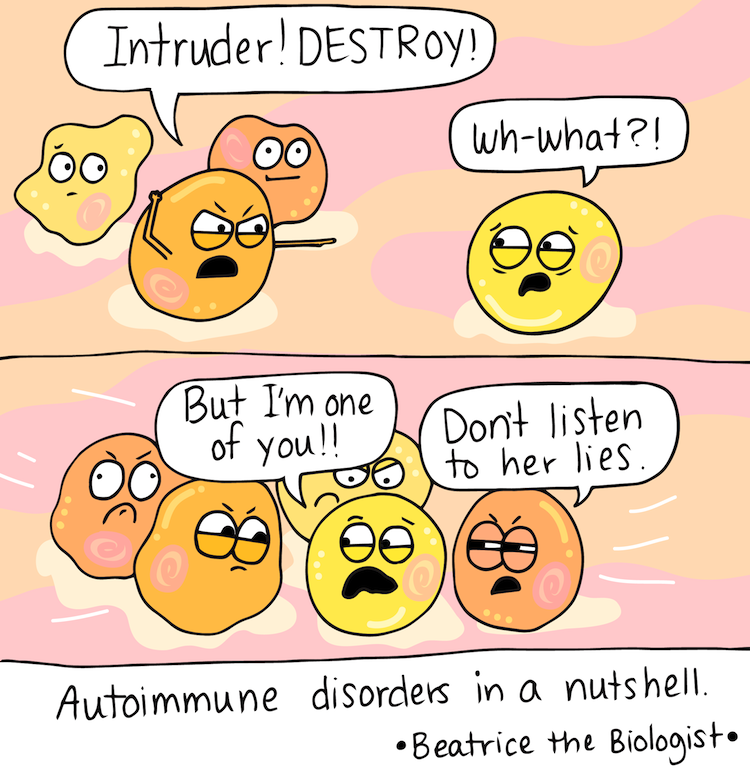

Knowledge is Power.Attitude is Everything.
So What is T1D?
Type one diabetes is your immune system mistakenly treats the beta cells in your pancreas that create insulin as foreign invaders and destroys them. When enough beta cells are destroyed, your pancreas can’t make insulin or makes so little of it that you need to take insulin to live.
What is Insulin?
Insulin is a hormone that helps blood sugar regulate. It enters your body’s cells so that it can be used as energy. If you have diabetes, blood glucose can’t enter your cells so it builds up in your bloodstream. This causes high blood sugar (hyperglycemia). Over time, consistently having elevated blood glucose harms your body and can lead to diabetes-related complications if not treated.

What is the difference between Type One and Type 2?
Low VS High
Low Blood Sugar (Hypoglycemia)
What It Is: Blood sugar (glucose) level drops below 70 mg/dL.Low blood sugar, or hypoglycemia, occurs when blood glucose levels drop below 70 mg/dL. It can be caused by skipping meals, taking too much insulin or diabetes medication, excessive exercise, or drinking alcohol without eating. Common symptoms include shakiness, sweating, dizziness, confusion, irritability, and a rapid heartbeat. To treat low blood sugar, it’s important to consume 15 grams of fast-acting carbohydrates—such as juice, glucose tablets, or candy—then wait 15 minutes and recheck levels. If symptoms persist, the process should be repeated. In severe cases where the person is unconscious, a glucagon injection is necessary, and emergency help should be called.
High Blood Sugar (Hyperglycemia)
What It Is: Blood sugar level rises above 180 mg/dL after meals or over 130 mg/dL fastingHigh blood sugar, or hyperglycemia, is when blood glucose levels rise above 180 mg/dL after meals or 130 mg/dL when fasting. This can happen due to overeating, missing medication, illness, stress, or lack of physical activity. Symptoms include frequent urination, increased thirst, blurred vision, fatigue, and in severe cases, signs of diabetic ketoacidosis such as nausea and confusion. Treatment involves staying hydrated, taking insulin if prescribed, and engaging in light exercise (if safe). Long-term control includes adjusting medications, managing diet, reducing stress, and regular blood sugar monitoring. Medical attention is needed if symptoms worsen or persist.
Subtypes of T1D
There are several subtypes of T1D that make diagnosis/ treatment slightly different for each individual. Here are some subtypes listed below.
| Subtype | Onset Speed | Typical Age of Diagnosis | Characteristics |
|---|---|---|---|
| Type 1 A | Acute / Rapid | Children and young adults (but can occur at any age) | Often develops over weeks or months once symptoms start and will become insulin dependent. Immune system attacks the pancreas. |
| Type 1 B | Acute / Rapid | Any age | Frequently presents with sudden ketoacidosis and is most common in people of African or Asian descent. |
| LADA (Type 1.5) | Slow-progressive | Typically found in adults over 30 | May take months or years to require insulin and frequently misdiagnosed as Type 2 diabetes |